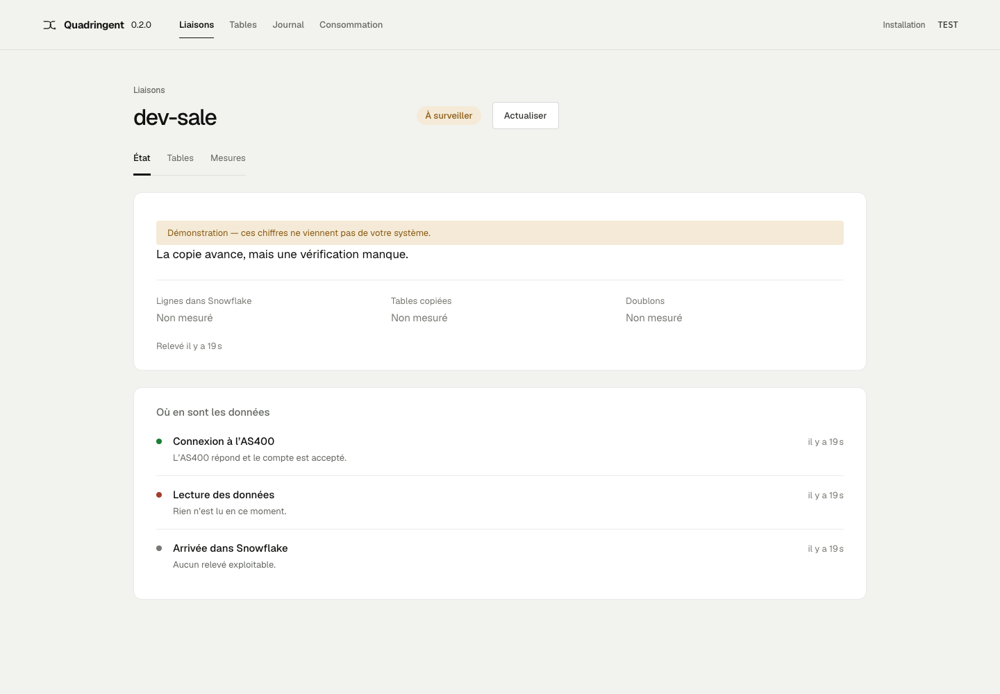

Lire n’est pas livrer.
Lecture du journal, brut S3, chargement et rapprochement restent des étapes distinctes. Un lecteur actif ne suffit pas à déclarer la destination à jour.
Du journal IBM i à la table Snowflake, voyez ce qui a été lu, déposé et réellement livré. Quand une mesure manque, Quadringent le dit.
Pour les équipes data qui exploitent leur propre infrastructure IBM i, AWS et Snowflake.

Lecture du journal, brut S3, chargement et rapprochement restent des étapes distinctes. Un lecteur actif ne suffit pas à déclarer la destination à jour.
Une action apparaît quand le service peut l’exécuter. Confirmation, checkpoint et reçu permettent de distinguer la demande de son effet observé.
Crédits Snowflake et prix déclaré. Volume S3 et tarif public relevé. Allocation du cluster via OpenCost. Chaque montant garde son périmètre et sa date.
Environnements non productifs. Desktop. Installation sur votre infrastructure. La déclaration d’une liaison ne la met pas automatiquement en service.
Les coûts demandent des sources configurées ; les calculs ne sont pas une facture. Authentification applicative désactivée par défaut sur le loopback : consultez le guide de sécurité avant toute exposition.
Lire les limites de sécurité →